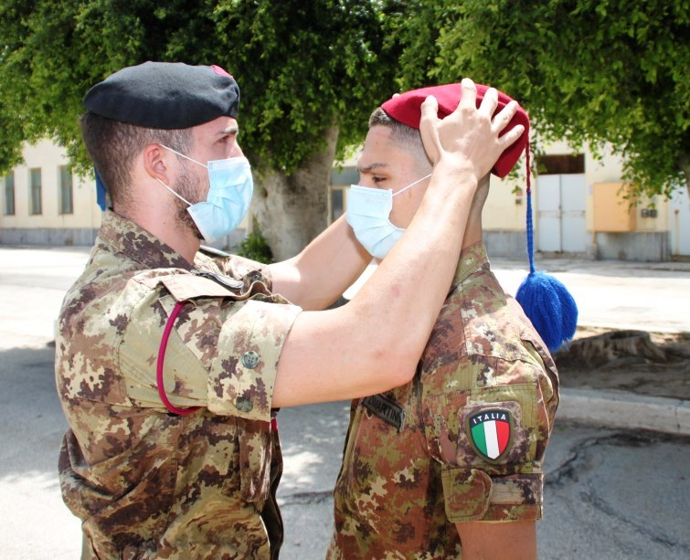

News ed Informazioni dalla Regione
 QR code
Canale WhatsApp ANB Reg.ne Lombardia
QR code
Canale WhatsApp ANB Reg.ne Lombardia

Ricordo Gen. Antonio Coppola

Inaugurazione Defibrillatore (❤️ di Bersagliere)

Presentazione Bersaglieri alle scuole

Bersaglieri Cultura e Legalità

Centenario Monumento al Bersagliere
Info dalla Regione
I PRIMI 100 ANNI DEL MONUMENTO AL BERSAGLIERE NON SOLO CURIOSITA’, MA UNA STORIA PARTICOLARE
- GOITO 1926 – 2026
 “Opera scultorea o architettonica, di rilevo storico e perlopiù di valore artistico, eretta a ricordo , commemorazione di qualche persona o evento”, questa è la definizione che un dizionario della lingua italiana riporta alla voce monumento...
“Opera scultorea o architettonica, di rilevo storico e perlopiù di valore artistico, eretta a ricordo , commemorazione di qualche persona o evento”, questa è la definizione che un dizionario della lingua italiana riporta alla voce monumento...
Studenti e Bersaglieri
Con la cerimonia di chiusura e il passaggio della stecca si è concluso il corso “Porta Pia” 2025" è un progetto che fa parte delle attività “Nulla Via Impervia” dell’associazione ODV Studenti e Bersaglieri. Il Campo estivo ha dato la possibilità di vivere una settimana, dove – oltre all’esperienza della vita in stile bersaglieresco – ragazze e ragazzi hanno affrontato, con responsabilità ed impegno, momenti di formazione civica e esperienziale, nei campi del primo soccorso sanitario, della defibrillazione precoce, dell’antincendio, della protezione civile e della legalità.
I bersaglieri hanno utilizzato insieme ai partecipanti droni e ricetrasmittenti; hanno vissuto l’esperienza di un processo penale e ne hanno visto gli effetti, visitando un carcere e parlando con i detenuti.
Durante il Campo estivo, inoltre, è stata data importanza all’allenamento fisico e alle virtù spirituali delle arti marziali. Chi ha preso parte al Campo ha conosciuto i professionisti del soccorso tramite visite alla Questura, all’Accademia della Guardia di Finanza, al Comando provinciale dei Carabinieri e ad una base elicotteristica dell’Esercito Italiano.
Le attività svolte dai ragazzi potranno essere certificate come momenti di alternanza scuola-lavoro (PCTO) ed i brevetti e le competenze, conseguiti nel rispetto di leggi e regolamenti nazionali, rimarranno comunque nel patrimonio individuale dell’allievo per sempre. Al termine del corso, i ragazzi che lo desidereranno potranno intraprendere un cammino di volontariato all’interno dell’associazione o delle altre realtà di volontariato che collaborano a questo progetto, certificando ulteriori crediti scolastici.
Il progetto “Porta Pia 2025” è patrocinato da Associazione Nazionale Bersaglieri, Provincia di Bergamo e Comunità Montana Valle Brembana. SicurScuola. Formazione competente, Aifos – Protezione Civile e Centro di Formazione Aifos. Protezione Civile di Albano Sant’Alessandro sono i partner tecnici per le attività formative.
Il plauso al progetto è giunto anche dalle autorità provinciali, regionali e nazionali. Numerosa la presenza dei labari e dei Bersaglieri dell' A.N.B. e dei rappresentanti locali e regionali.
Bersaglieri in Festa a Bovezzo

La Sezione di Valletrompia durante la preparazione dell'evento è stata contattata da quattro persone di passaggio che hanno svolto il servizi militare nei bersaglieri, motivandoli ad iscriversi alla Associazione.
3º Reggimento Bersaglieri in Russia

Foto gentilmente concesse dal Sig. Bruno Giorgio Ariberti, scattate dal padre Bers. Giuseppe Ariberti; sono immagini dal profondo valore emotivo a testimonianza di quei tragici momenti che hanno caratterizzato la nostra storia e che ancora continuano a fare.


Presidenza Nazionale
Come promesso nel mio precedente saluto eccomi ancora a voi per farvi sentire la voce della Presidenza Nazionale. Da allora è trascorso solo poco più di un mese ma sembra molto di più a causa dell’inattività sociale che siamo costretti a vivere in questo periodo.

Madonna del Cammino - Rovato

Concerto Fanfara - Magenta

Immagine 3
Immagine 4